FlowLink
Hey! Thanks for testing our prototype!
The prototype works without any internet connection. We don't track any personal data. For testing purposes, we only track if and how long you use the App. For feedback or questions of any kind just contact us directly! Have fun and stay focused!
More about our concept
Being successful in the 21. Century, means doing work that requires your complete cognitive ability. Doing hard to reproduce work excites most knowledge workers but that requires being „in the zone“. Unfortunately, there is a problem with that. When talking with our target group, they told us: Getting into the zone requires overcoming a hurdle which can be very challenging and leads to procrastination. That’s what we want to tackle.

One concept that tackles hard to reproduce work is called Deep Work. Deep Work means to eliminate all disrupting factors to work with full concentration on a difficult task. Before entering a Deep-Work-Phase, there is a hurdle. To overcome that, we came up with a simple idea.
The red thread
Connect the Deep Work phases of the same tasks and thereby eliminate the hurdle to entry. It is also possible to connect different tasks of the same project. In the Prototype you have to give tasks the same name in order for them to be recognized by the system. How are we going to do that?
When completing a Deep Work session we save the context, which means music, your tools, all your surroundings. Then when you continue the task you are right there where you left off - the song picks up where it ended the last time, all your tools are open again and you can continue your task like you have never left in the first place. In the current prototype only the music is saveed. To get back in the same state of mind you also have to answer a few questions.

The Guideline
When completing a task the user is asked to state his upcoming goal, as well as the associated challenges and any potential solutions to those challenges. This serves as a guideline when continuing the task. You quickly know where you left off and what you have to do to finish the task. We included aspects of the hero’s journey to create the questions to build the guideline. Every challenging task can be seen as a dragon you have to fight, the main goal in sight.
This is FlowLink
A tool that integrates itself into the flexible daily schedule of knowledge workers, guides them to self-reflection and, by linking the work phases with the red thread, eliminates the entry hurdle to flow and thus maximizes difficult to reproduce work.
The Frame
To support the concept of the red thread we need structure. The boot-up and shut-down ritual provide this supporting structure. The system instructs the user to schedule the working days for the coming week. When is the boot-up, when is the shut-down? How much Deep Work would you like to do? In the shut-down ritual you clarify for yourself that the work day has ended and optionally adjust the plan for tomorrow. In the boot-up ritual you start your work day and are presented with your plan for the day. You are presented a recap of your work day in form of a comparison between the Deep Work you planned to do and the Deep Work you actually did.
The shut-down and boot-up functionallity is not included in the prototype. But,we would advise you to implement a shut-down and boot-up ritual manually as long as the prototype does not have this functionallity for the best experience.